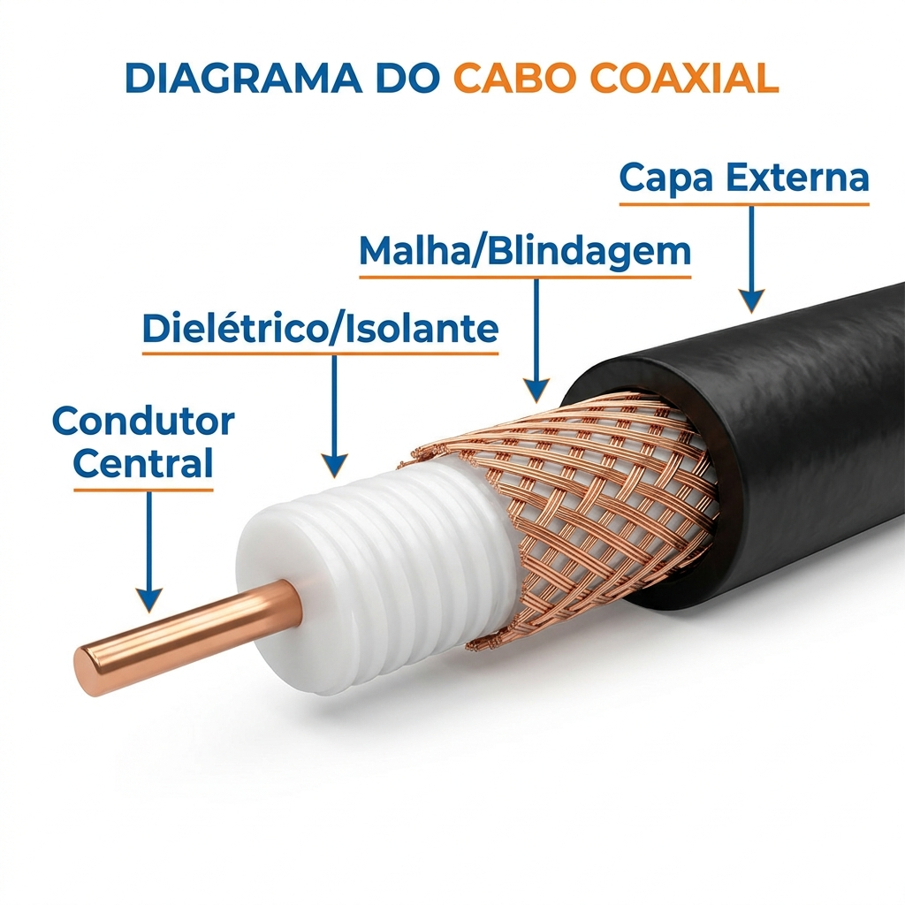
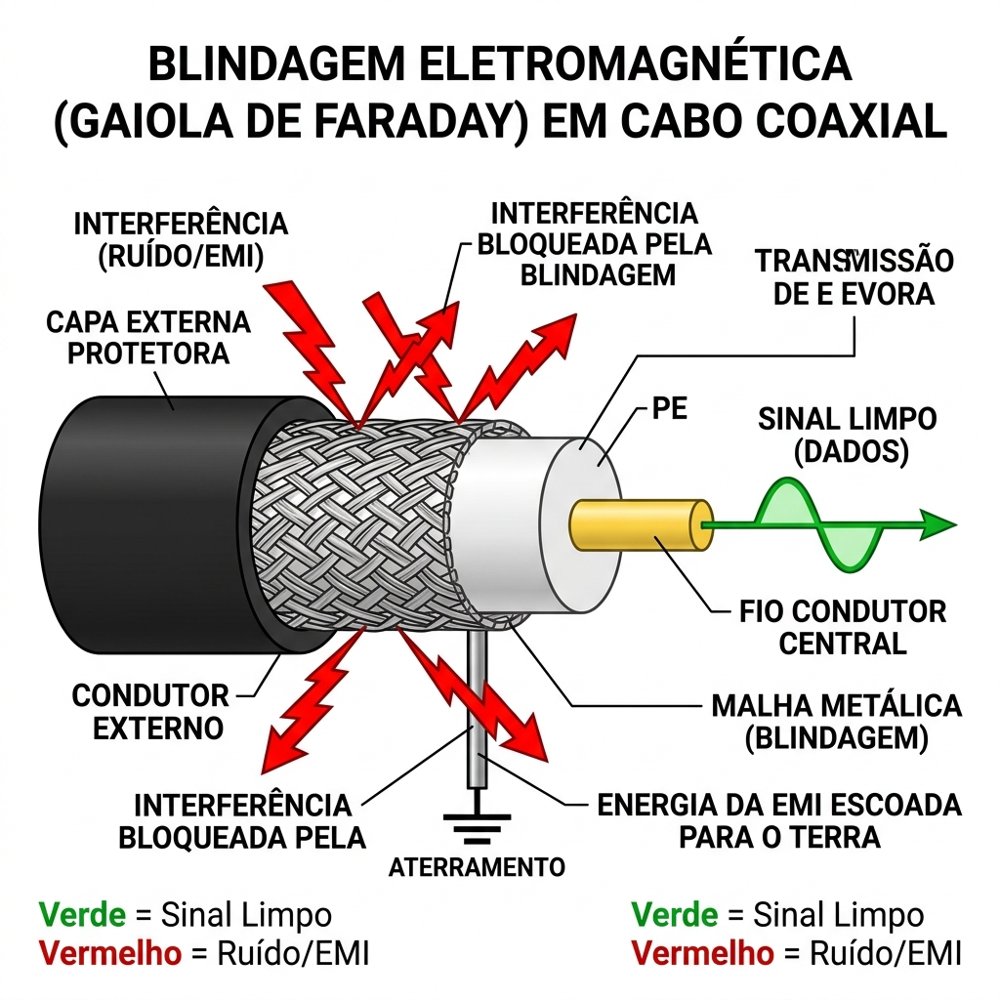

Instalações de Ambiente Computacional
Introdução ao Cabeamento
Meios Físicos e o Cabo Coaxial
Prof. Thiago Medeiros
Universidade do Estado do Rio de Janeiro
A Importância dos Fios
1.1 — Por que estudar cabos hoje?
Vivemos cercados por tecnologias sem fio (Wi-Fi, 5G, Bluetooth). Então, por que o cabeamento estruturado ainda é a espinha dorsal de qualquer infraestrutura de TI?
A Ilusão do Wireless
O "Sem Fio" é apenas a última milha. Toda antena de celular, todo roteador Wi-Fi, está conectado a uma complexa teia de cabos no fundo.
- Confiabilidade Absoluta: Sinais no ar sofrem com paredes, microondas, chuva. O cabo é blindado.
- Largura de Banda: Datacenters dependem de cabos para trafegar 100 Gbps, algo impensável no Wi-Fi comercial.
- Segurança Física: É muito mais difícil interceptar um cabo físico do que capturar um sinal de rádio espalhado pelo ar.
A Nuvem Tem Peso
"A Nuvem é apenas o computador de outra pessoa, conectado a você através de milhares de quilômetros de cabos submarinos e subterrâneos."
1.2 — Os Três Meios de Transmissão
Toda informação digital (0s e 1s) precisa de um meio físico para viajar de um computador a outro.
1. Elétrico (Cobre)
A informação viaja como tensão elétrica (Volts).
Prós: Fácil de instalar, flexível.
Contras: Pode sofrer interferência magnética ou dar choque.
2. Óptico (Vidro)
A informação viaja como pulsos de luz.
Prós: Velocidade extrema, não sofre interferência, longa distância.
Contras: Frágil, instalação cara.
3. Espaço (Ar)
A informação viaja como ondas eletromagnéticas invisíveis.
Prós: Mobilidade total para o usuário.
Contras: Barreira física atrapalha, espectro de rede é limitado.
O Cabo Coaxial
2.1 — Anatomia do Cabo Coaxial
O nome "Coaxial" vem do fato de que o condutor interno e a malha externa compartilham o mesmo eixo central.

As 4 Camadas Clássicas
- Condutor Central: Um fio grosso de cobre puro. É aqui que viaja o sinal da internet ou da TV.
- Dielétrico (Isolante): Um plástico branco que impede a malha de encostar no cobre, evitando um curto-circuito.
- Malha/Blindagem: Uma rede metálica que funciona como um escudo protetor contra ruídos e também serve como terra de referência.
- Capa Externa: Protege contra sol, chuva e desgastes.
2.2 — O Segredo: A Gaiola de Faraday
O maior trunfo do cabo coaxial sobre os fios simples de cobre é a sua imunidade a ruídos devido ao efeito da Gaiola de Faraday.
Como funciona a blindagem?
- O ambiente está cheio de Interferência Eletromagnética (EMI): lâmpadas, motores, antenas de rádio.
- A malha metálica do cabo envolve completamente o condutor interno.
- Quando a interferência externa atinge o cabo, ela bate na malha metálica e é dispersada, não conseguindo chegar ao centro.

2.3 — O Conceito de Impedância
Diferentes aplicações usam cabos coaxiais levemente diferentes, medidos pela sua Impedância (Ohms - $\Omega$).
O que é Impedância?
Didaticamente, é a "resistência" que o cabo oferece à passagem do sinal de alta frequência. Para o sinal fluir perfeitamente, os equipamentos das duas pontas devem ter a mesma impedância do cabo.
Casamento de Impedância
Se você ligar um cabo de 50 $\Omega$ em um equipamento de 75 $\Omega$, parte do sinal "bate na parede" e volta, gerando eco e perda de dados na rede.
Os Padrões Históricos
- 50 Ohms (RG-58, RG-8): Historicamente foi o padrão escolhido para redes locais de computadores (como as antigas 10Base2). Tem excelente transferência de potência.
- 75 Ohms (RG-59, RG-6): Padrão escolhido para Vídeo e Televisão, pois possui menor perda de sinal em médias e longas distâncias.
2.4 — Evolução e Aplicações
O Cabo Coaxial já foi o padrão absoluto para ligar PCs em LAN houses (redes em Barramento), mas hoje perdeu esse posto para o cabo de rede azul (Par Trançado).
RG-59 e BNC
Mais fino e flexível. O sinal degrada mais rápido.
Onde vemos: Em sistemas antigos de Câmeras de Segurança (CFTV) analógicas, geralmente usando um conector do tipo BNC de engate rápido.
RG-6 e Conector F
Grosso, blindagem extra, suporta altas frequências.
A Última Milha: É o cabo branco ou preto que o técnico da operadora de internet (Claro/NET) puxa do poste até o modem dentro da sua casa. Usa o conector tipo F (de rosquear).
Apesar de não usarmos mais entre os nossos computadores, o coaxial evoluiu incrivelmente e hoje entrega internet na casa de milhões de pessoas com velocidades acima de 500 Mbps.